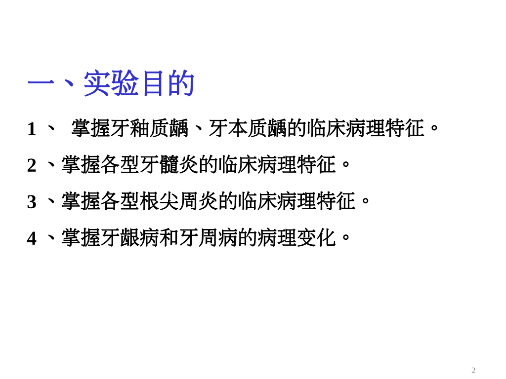
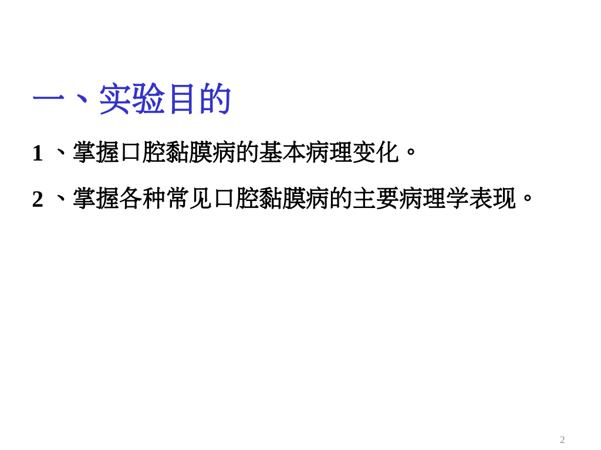
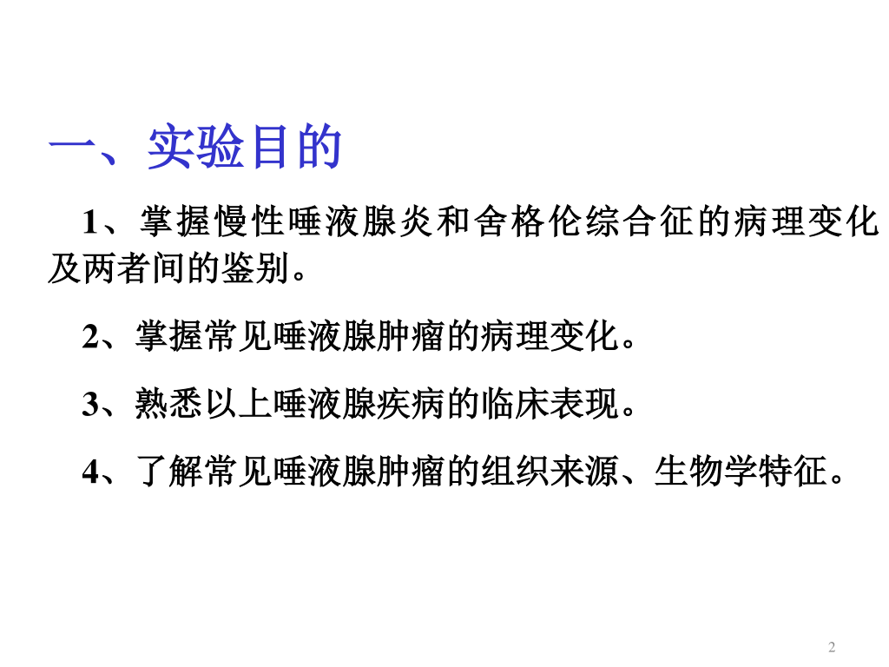
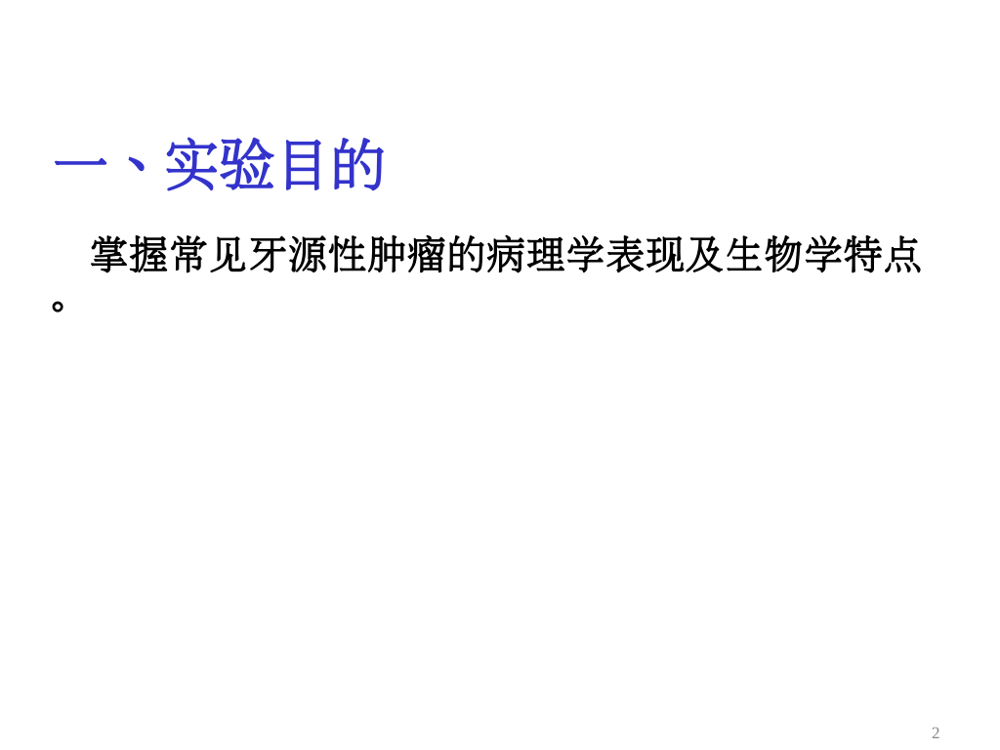
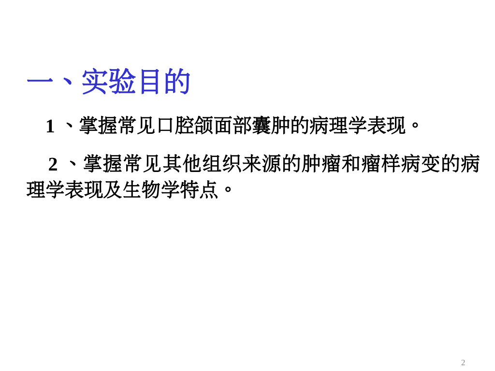
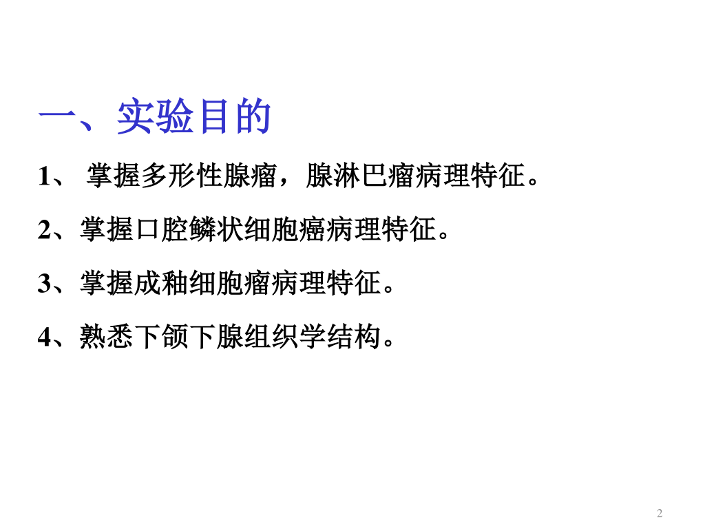

先读目标页，再练原图
颌面部发育当前阅读版第 4、60 页对应旧版第 9、70 页；两版的要求与思考题已逐项比对。牙周组织第 3 页给出掌握要求，第 83 页要求比较三种上皮。唾液腺肿瘤第 3 页列出要掌握的五种肿瘤。先遮住课件试答，再回实验六比较组织结构。
直接查看六次实验的教师原页
按章找原件
打开学习通课程门户，进入已选课程的“章节”，按下列节号和原文件名查找。
用本机已下载的课件
选择本课的“期末教师资料_20261125”文件夹，页面会把原件与节号配对。本次选择只在这个标签页有效。
01 第一章 口腔颌面部的发育 · 1 份
- 第一章口腔颌面部的发育（贾）.ppt · 1.1 · 章节课件
本章复习与自测
02 第二章 牙齿发育 · 1 份
- 第二章牙的发育（贾）.ppt · 2.1 · 章节课件
本章复习与自测
03 第三章 牙体组织 · 1 份
- 第三章牙体组织（贾）.ppt · 3.1 · 章节课件
本章复习与自测
04 第四章 牙周组织 · 1 份
本章复习与自测
05 第五章 口腔黏膜 · 1 份
- 第五章口腔黏膜（9.8）.ppt · 5.1 · 章节课件
本章复习与自测
06 第六章 唾液腺 · 1 份
本章复习与自测
07 第八章 牙发育异常 · 1 份
- 第八章牙发育异常.ppt · 7.1 · 章节课件
本章复习与自测
08 第九章 龋病 · 1 份
- 2020第九章龋病.ppt · 8.1 · 章节课件
本章复习与自测
09 第十章牙髓病(1)第十一章根尖周病(1) · 1 份
- 10.11.牙髓病.根尖周炎.pptx · 9.1 · 章节课件
本章复习与自测
10 第十二章 牙周组织病 · 1 份
- 12.牙周组织病.pptx · 10.1 · 章节课件
本章复习与自测
11 第十三章 口腔黏膜病（一） · 1 份
- 2020第十三章口腔黏膜病(一）.pptx · 11.1 · 章节课件
本章复习与自测
12 第十三章 口腔黏膜病（二） · 1 份
- 2020第十三章口腔黏膜病(二）.ppt · 12.1 · 章节课件
本章复习与自测
13 第十四章颌骨疾病(1)第十六章唾液腺疾病（一）(1) · 2 份
- 第十四章颌骨疾病1.ppt · 13.1 · 章节课件
- 第十六章唾液腺非肿瘤性疾病1.ppt · 13.1 · 章节课件
本章复习与自测
14 十六章唾液腺肿瘤 · 1 份
- 第十六章 唾液腺肿瘤2(1).ppt · 14.1 · 章节课件
本章复习与自测
15 十七章口腔颌面部囊肿 · 1 份
- 第十七章口腔颌面部囊肿(2).pptx · 15.1 · 章节课件
本章复习与自测
16 十八章牙源性肿瘤 · 1 份
- 十八章牙源性肿瘤.ppt · 16.1 · 章节课件
本章复习与自测
17 第十八章牙源性肿瘤和瘤样病变十九章口腔颌面部其他组织来源的肿瘤和瘤样病变 · 2 份
- 十八章牙源性肿瘤(2).ppt · 17.1 · 章节课件
- 第19章_口腔颌面部其他组织来源的肿瘤和瘤样病变1212.ppt · 17.1 · 章节课件
本章复习与自测
18 实验四 龋病，牙髓病，根尖周病，牙周组织病 · 1 份
- 实验四龋病、牙髓病、根尖周病、牙周炎.pptx · 18.1 · 实验课件
本章复习与自测
19 实验五口腔黏膜病 · 1 份
- 实验五口腔黏膜病.ppt · 19.1 · 实验课件
本章复习与自测
20 实验六唾液腺疾病 · 1 份
- 实验六唾液腺疾病.ppt · 20.1 · 实验课件
本章复习与自测
21 实验七牙源性肿瘤 · 1 份
- 实验七牙源性肿瘤.ppt · 21.1 · 实验课件
本章复习与自测
22 实验八颌骨疾病、口腔颌面部囊肿及其他肿瘤和瘤样病变 · 1 份
- 实验八颌面部囊肿、肿瘤样变.ppt · 22.1 · 实验课件
本章复习与自测
23 实验九切片总结 · 1 份
- 实验九组织学、病理学常见切片观察.ppt · 23.1 · 实验课件
本章复习与自测
六次实验，教师要求看到什么
实验四至九的原课件都在第 2 页列出实验目的，第 3 页列出切片。展开可看教师原页，并按同一目标自测。
实验四 · 龋病、牙髓病、根尖周病、牙周组织病
掌握牙釉质龋和牙本质龋的临床病理特征、各型牙髓炎与根尖周炎的特征，以及牙龈病和牙周病的病理变化。
闭卷练习 依次给深龋、牙髓炎、根尖周肉芽肿各写一条定位依据。

教师课件第 2 页 · 点图可放大学习通课程门户（视频在 18.2） · 回到本实验
实验五 · 口腔黏膜病
掌握黏膜病的基本病理变化，辨认常见黏膜病的主要病理表现。
闭卷练习 先说角化、裂隙或基底层变化，再在白斑、扁平苔藓、天疱疮之间作鉴别。

教师课件第 2 页 · 点图可放大学习通课程门户（视频在 19.2） · 回到本实验
实验六 · 唾液腺疾病
区分慢性唾液腺炎与舍格伦综合征；掌握常见唾液腺肿瘤病理，熟悉临床表现，并了解组织来源与生物学特征。
闭卷练习 先找残留腺泡、导管与浸润细胞，再对实验列出的四种肿瘤各报一种结构。

教师课件第 2 页 · 点图可放大学习通课程门户（视频在 20.2） · 回到本实验
实验七 · 牙源性肿瘤
掌握常见牙源性肿瘤的病理表现和生物学特点。
闭卷练习 从成釉细胞瘤、牙源性钙化上皮瘤和牙源性腺样瘤中各选一张，口述鉴别线索。

教师课件第 2 页 · 点图可放大学习通课程门户（视频在 21.2） · 回到本实验
实验八 · 颌骨疾病、囊肿及其他肿瘤
掌握常见颌面部囊肿的病理表现及其他组织来源肿瘤、瘤样病变的病理和生物学特点。
闭卷练习 囊肿先看衬里；乳头状病变再看纤维血管轴；疑鳞癌要找上皮巢与间质关系。

教师课件第 2 页 · 点图可放大学习通课程门户（视频在 22.2） · 回到本实验
实验九 · 组织学、病理学切片观察
能辨认多形性腺瘤、腺淋巴瘤、口腔黏膜鳞状细胞癌、成釉细胞瘤，熟悉下颌下腺的正常组织学结构。
闭卷练习 五张打乱顺序，先分正常与异常，再给病变指出两处可见证据。

教师课件第 2 页 · 点图可放大学习通课程门户（视频在 23.2） · 回到本实验
暑假附件与平台作业
郭倩在学习通资料区上传的《26年暑假口腔组织病理学复习资料》共 79 题，另有 11 套可回看的平台作业共 83 题。各练习按原题号保留；暑假资料的名解答案在题下单独标明。
按作业名练习
范围与缺口
现有材料能定位课件、实验和可回看的作业。未找到本届正式教学大纲、期末分章分值或考试日期；另有一套未提交作业及限制回看的考试，题目未计入。
学习通课程门户
资料核对记录